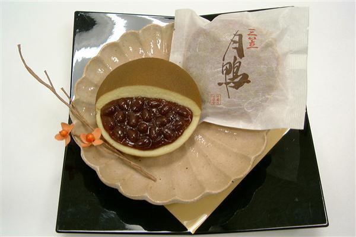

音声：NHKクリエイティブ・ライブラリー
※マナーモード時は音声が再生されません。
Translated by WILLIAM N. PORTER
English Audio:LibriVox
読み札
取り札
音声
Audio
阿倍仲麻呂
天の原
ふりさけみれば
春日なる
三笠の山に
出でし月かも

みかさのや
まにいてし
つきかも
あまの
- 7番歌
-
天の原
ふりさけみれば 春日なる
三笠の山に 出でし月かも
作者：阿倍仲麻呂（698年頃～770年）
出典：古今和歌集 羇旅
- 現代語訳
- 遥かな大空を仰ぎ見ると月が出ていた。あの月は春日の三笠山に出ていた月と同じなのだろうか。
- 解説
- 『古今集』の詞書に「唐土にて月を詠みける」とあります。この歌は長く唐にいた阿倍仲麻呂が帰国する際、明州（現在の寧波市）で催された送別の宴で詠んだものです。三笠山では遣唐使が唐への航海の安全を祈る祭祀が行われたとされています。
- どんな人？
- 10代後半で留学生として遣唐使と共に唐に渡った阿倍仲麻呂は、20代で科挙に合格し、要職を得て玄宗 皇帝に仕えました。優れた才能のため唐での職を離れることを許されず、50歳を過ぎてやっと帰国の途につきましたが、船が暴風雨に遭いベトナムに漂着しました。その後、長安に戻り73歳で亡くなりました。
- 品詞分解と文法
-
左の原文の単語をタップ（クリック）すると、品詞・活用・解説がここに表示されます。
- 阿倍仲麻呂の心のチャート
-
歌人の心の内をチャートと現代の言葉で描いてみました。
異国の空に、懐かしい月。
遠く離れても、空は一つ。
月を仰ぎ、故郷を思う。
- 歌のイメージ
-

この画像は、William N. Porter氏が1909年にイギリスで出版した百人一首の英訳本『A Hundred Verses from Old Japan』の挿絵を元にAdobe Firefly（生成AI）で色を付けて、アレンジしたイメージです。
- 付録
-
- 三笠山の麓にある春日大社
-

三笠山のふもと、奈良公園の一角にある神社で、藤原氏の氏神が祀られています。 周囲に広がる春日野は、穏やかな自然に包まれた神聖な場所で、古くから人々の祈りの場でした。 遠く唐の地にあった阿倍仲麻呂も、この春日野の月を思い浮かべながら、異国の空を見上げていたのかもしれません。
- 美味しい和菓子『月鴨』
-

京都の老舗和菓子店「甘春堂」さんの「月鴨」と名付けられたどらやきは、阿倍仲麻呂の百人一首の歌が名前の由来になっています。
- 遣唐使の航路
-

クリックすると拡大表示されます。
遣唐使は難波津を出発し、瀬戸内海を通って博多津へ向かい、そこから唐へ渡りました。当初は朝鮮半島に沿って唐に入る「北路」が使われていましたが、新羅との関係が悪化したため、やがて朝鮮半島の近くを避けて、海を横断する南路に変わります。遣唐使船には羅針盤がなく、南路では陸の目印も頼れませんでした。そのため、北路と比べて、はるかに危険で難しい航海となりました。 - 藤原清河の歌
-
阿倍仲麻呂と共に帰国を願った遣唐使の中に藤原清河がいました。しかし、彼もまた帰国の願いを果たせず、唐の地で生涯を終えます。その清河が唐へ出発する前に詠んだのが次の歌です。
原文
春日野に 斎く三諸の 梅の花
栄えてあり待て 帰り来るまで 『万葉集』藤原清河現代語訳
春日野の神の社に咲く梅の花よ。
どうか美しく咲き続けたまま、
私の帰りを待っていてほしい。 - 仲麻呂の訃報を聞いた李白の詩
-
阿倍仲麻呂は唐で李白や王維などの漢詩人と交友がありました。次の詩は『哭晁卿衡』という李白の七言絶句（一句七言で四句からなる漢詩）です。「晁衡」は仲麻呂の唐名です。次の詩は仲麻呂の遭難の知らせを聞いた李白が哀悼の意を込めて詠んだ詩です。
原文：
日本晁卿辞帝都
征帆一片遶蓬壷
明月不帰沈碧海
白雲愁色満蒼梧
書き下し文：
日本の晁卿、帝都を辞し
征帆一片蓬壺を遶る
明月帰らず碧海に沈み
白雲愁色蒼梧に満つ現代語訳：
日本の晁衡は都・長安を去り、
ひとひらの船で東の大海原を
何とか渡ろうとするが、
明月のように高潔だった彼は
碧海に沈み帰らぬ人となった。
白雲が憂いを帯び、蒼梧に満ちる。晁衡：阿倍仲麻呂の唐での名前です。
蓬壺：東の海にあると信じられた伝説の山。日本のことと解釈する説もあります。
蒼梧：広西省東部の地名。
- 日中友好の印 阿倍仲麻呂の記念碑
-

Indiana jo, CC BY-SA 4.0 , via Wikimedia Commons 中国西安市（かつての都・長安）の興慶宮の跡地にある公園には、阿倍仲麻呂の記念碑が建てられています。仲麻呂と李白の友情を日中友好の象徴として建てられたもので、記念碑の側面には、仲麻呂の百人一首の歌を中国語訳したものと仲麻呂の訃報を聞いた李白が詠んだ『哭晁卿衡』の詩が刻まれています。地図へのリンク
- 葛飾北斎による浮世絵
-

Katsushika Hokusai; Katsushika Hokusai died 1849-05-10; Nishimura Yohachi, Public domain, via Wikimedia Commons 江戸時代の浮世絵師・葛飾北斎による作品『百人一首姥かゑとき』です。百人一首の歌を乳母がわかりやすく絵で説明するという趣旨で制作されたものです。海の方向を見つめる仲麻呂が描かれています。きっと東の海を眺めて、祖国を思っているではないでしょうか。海面に浮かぶ月や東からの風を受けてたなびく旗も印象的です。
- 歌川国芳の『百人一首之内』
-

British Museum, Public domain, via Wikimedia Commons 江戸時代の浮世絵師・歌川国芳による浮世絵です。
百人一首の和歌に合わせた情景が描かれています。 - 月岡芳年の『月百姿』
-

芳年『月百姿 あまの原ふりさけみれは春日なる 三笠の山に出し月かも』,秋山武右エ門,明治２１. 国立国会図書館デジタルコレクション https://dl.ndl.go.jp/pid/1306326 (参照 2024-06-29) 幕末から明治時代前半にかけて活躍した浮世絵師・月岡芳年による浮世絵です。右に描かれているのが、おそらく阿倍仲麻呂。春日野の月を懐かしく思いながら、大海に浮かぶ月を眺めている情景が描かれています。左の人物は明らかではありませんが、阿倍仲麻呂と親交を結んだ李白や王維といった詩人として描かれたのかもしれません。


{kind=link}
{kind=link}
_%E5%AE%89%E5%80%8D%E4%BB%B2%E9%BA%BB%E5%91%82_(BM_2008,3037.10607).jpg){kind=link}
次の和歌へ
前の和歌へ